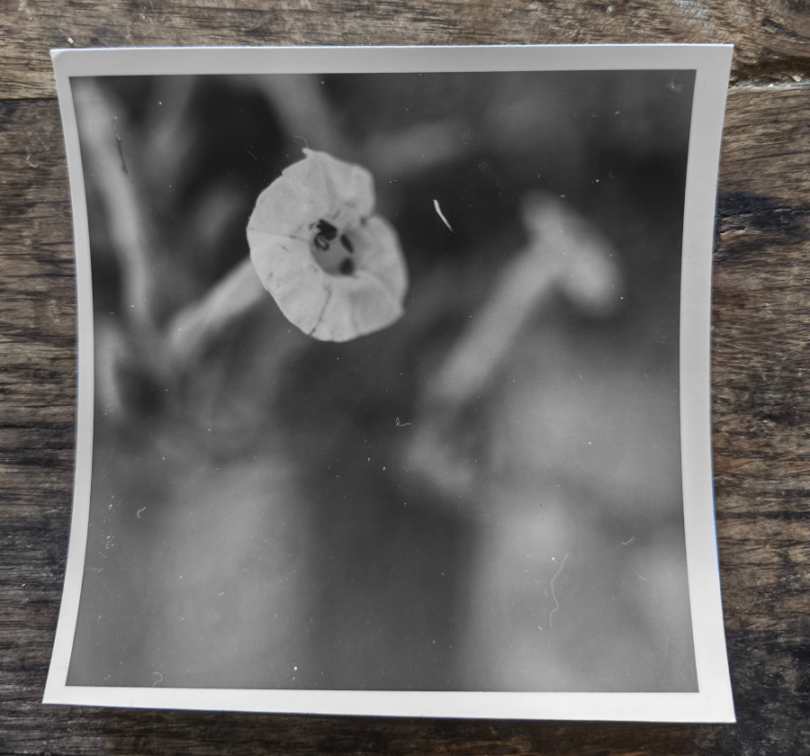
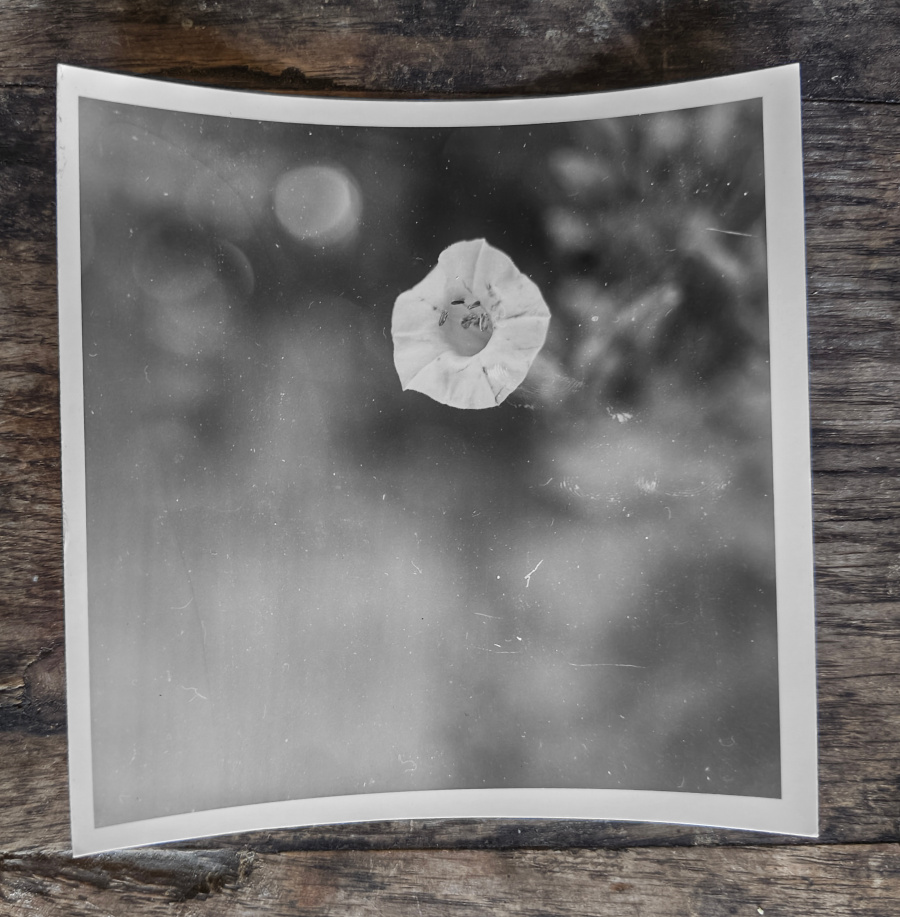
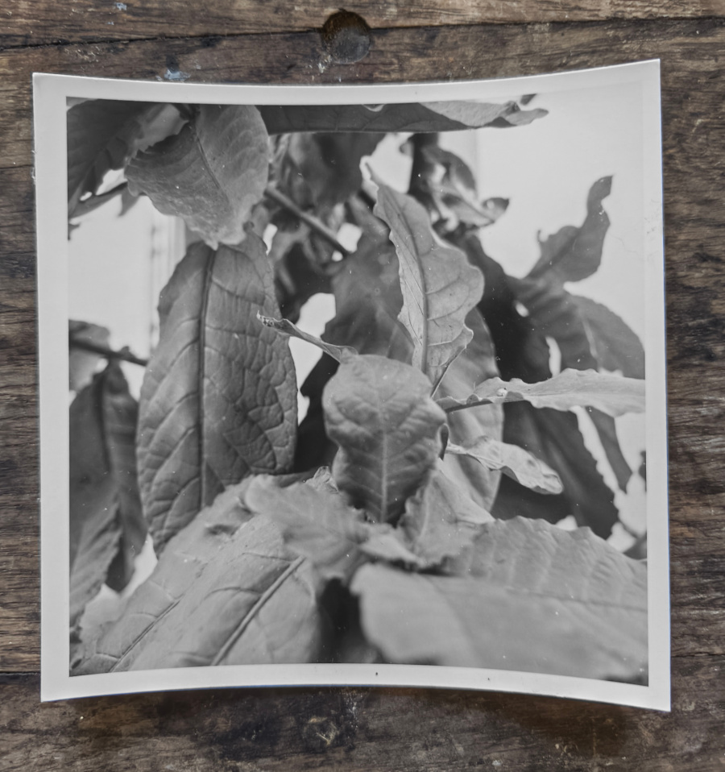

I remember a path leading to a house. I believe it was a friend's house, and I was probably four or five years old, I was following my dad, tall and dark and all - oftentimes, when my children were little, I wondered what kind of safety do they read in those complex ugly faces of adults. I remember the safety I felt with him; it was deeper than sight. He passed me his cigarette, smiling, harmless. What conversation led him to do it? I don't know. Perhaps it was a moment of imagined genius, perhaps he thought that with one puff at that tender age, he would render me a non smoker for life.

It put me off till the age of fourteen, when my closest friend at the time announced that his parents are going away for the weekend, and that his older brother left a full packet of Camels in the drawer of his desk. We were burning to smoke; smoking was on the list with driving, sex, beer: what seperated us from grown up men and true knowing. A long weekend infront of us. Cellophane and silver foil removed, 20 stiff fags; the cigarettes in the soft packs were extracted by tapping on one side of the top to squeeze them out; my friend was trying to expertly perform what he saw others habitually do, then light me one with a Zippo that he carried with him - I inhaled... and coughed it out immediately. I could not believe how horrible it was: the digusting taste, the burning smoke, the dry hell. We were laughing, rolling on the floor. The incredible disappointment after such a build up.

He tried next, forcing the smoke in, and ended up choking and coughing badly. We went over to the kitchen and drowned the fowl taste in sugared fizzy drinks, one bad habbit to mask another. Well, we had a long weekend infront of us, and by the end of it we acquired the skill, tempered our lungs, and were smokers. It has been a few decades since I smoked my last one, I stopped when I was smoking half of my life, not sure if I did the count at the time. About my companion, I can't tell; I haven't come across him all those years.
